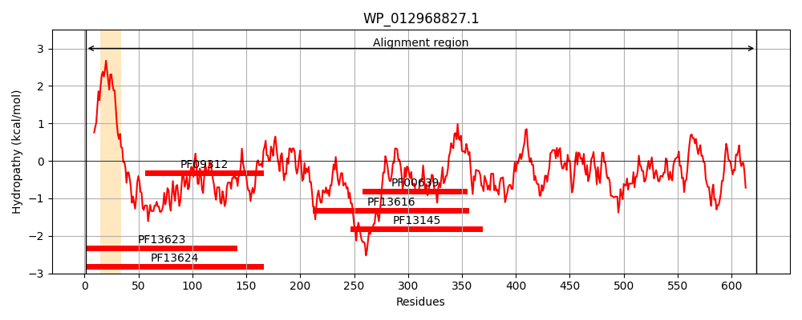
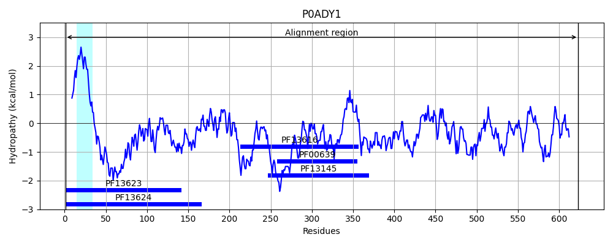
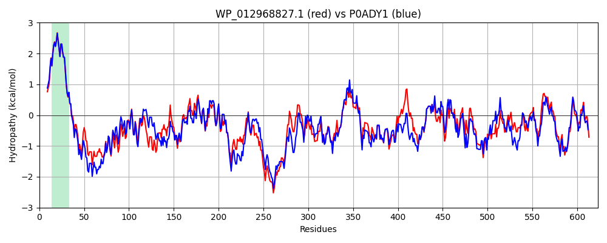

Hit Accession: P0ADY1
Hit TCID: 3.A.5.1.1
Hit Description: gnl|BL_ORD_ID|8762 gnl|TC-DB|P0ADY1|3.A.5.1.1 Peptidyl-prolyl cis-trans isomerase D OS=Escherichia coli (strain K12) OX=83333 GN=ppiD PE=1 SV=1
Mach Len: 623
e:0.000000
Query TMS Count : 1
Hit TMS Count: 1
TMS-Overlap Score: 1.000000
Predicted Substrates:CHEBI:8526;protein polypeptide chain
BLAST Alignment:
Score: 2514 , Bit scores: 973 bits, E-value: 0.0e+00, Alignment length: 623, Percentage identity: 79
Query: 1 MMDNLRTAANSVVLKIIFGIIIVSFILTGVSGYLIGGGKNYAAKVNGQEIGRGQFENAVASERNRMQQQLGDQFSELAANENYMKTMRQQVLNRLIDESLLDQYARELGLSISDEQVKQAIFQTQAFQTNGKFDNQRFSGIVAQMGMTTDQYAQALRNQLTTQQLINAIAGTDFMLPGESDQLAALVSQQRVVREATINVNALAAKQTASDEEINAFWQQNQARFMAPEQFRVSYIKMDAASMQESASDEEIQSWYDQHKDQFTQPQRNRYSVIQTKTEADAKAVLAELQKGADFATLAKEKSTDIISARNGGDMGWMEEASTVPELKDAGLKEKGQLSGVIKSSVGFLVARLDDVQPAQVKPLADVRNDIAAKVKQEKALDAYYALQQKVSDAASNDNESLAGAAQVAGLKVVETGWFGRDNLPEELNFKPVADAIFNGGLVGENGAPGSNSDIITVDGDRAFVLRISEHKAEAVKPLAEVKAQVSDIVKHNKAEQQAKLDADKLLAALKDGKGDEAMKAAGLSFGAPQTLSRTGQDPLSQLAFTLPLPQQGKPVYGVGSNMQGDVVLVALDEVKAGNMPEEQKKAMVQGITQNNAQIAFEALMSNLRKAAKIKLGDSIDQQ 623
MMD+LRTAANS+VLKIIFGIIIVSFILTGVSGYLIGGG NYAAKVN QEI RGQFENA SERNRMQQQLGDQ+SELAANE YMKT+RQQVLNRLIDE+LLDQYAREL L ISDEQVKQAIF T AFQ +GKFDN R++GI+ QMGMT DQYAQALRNQLTTQQLIN +AGTDFML GE+D+LAALV+QQRVVREATI+VNALAAKQ +++EI ++++QN+ FM PEQFRVSYIK+DAA+MQ+ SD +IQS+YDQH+DQFTQPQR RYS+IQTKTE +AKAVL EL KG DFA LAKEKS DIISARNGGDMGW+E+A+ ELK+AGLKEKGQLSGVIKSSVGFL+ RLDD+QPA+VK L +VR+DIAAKVK EKALDAYYALQQKVSDAASND ESLAGA Q AG+K +TGWF +DNLPEELNFKPVADAIFNGGLVGENGAPG NSDIITVDGDRAFVLRISEHK EAVKPLA+V+ QV +V+HNKAEQQAK+DA+KLL LK GKG EAM+AAGL FG P+TLSR+G+DP+SQ AF LPLP + KP YG+ ++MQG+VVL+ALDEVK G+MPE+QKKAMVQGITQNNAQI FEALMSNLRK AKIK+GD+++QQ
Sbjct: 1 MMDSLRTAANSLVLKIIFGIIIVSFILTGVSGYLIGGGNNYAAKVNDQEISRGQFENAFNSERNRMQQQLGDQYSELAANEGYMKTLRQQVLNRLIDEALLDQYARELKLGISDEQVKQAIFATPAFQVDGKFDNSRYNGILNQMGMTADQYAQALRNQLTTQQLINGVAGTDFMLKGETDELAALVAQQRVVREATIDVNALAAKQPVTEQEIASYYEQNKNNFMTPEQFRVSYIKLDAATMQQPVSDADIQSYYDQHQDQFTQPQRTRYSIIQTKTEDEAKAVLDELNKGGDFAALAKEKSADIISARNGGDMGWLEDATIPDELKNAGLKEKGQLSGVIKSSVGFLIVRLDDIQPAKVKSLDEVRDDIAAKVKHEKALDAYYALQQKVSDAASNDTESLAGAEQAAGVKATQTGWFSKDNLPEELNFKPVADAIFNGGLVGENGAPGINSDIITVDGDRAFVLRISEHKPEAVKPLADVQEQVKALVQHNKAEQQAKVDAEKLLVDLKAGKGAEAMQAAGLKFGEPKTLSRSGRDPISQAAFALPLPAKDKPSYGMATDMQGNVVLLALDEVKQGSMPEDQKKAMVQGITQNNAQIVFEALMSNLRKEAKIKIGDALEQQ 623 | Protein Hydropathy Plots: |
|---|
|  |  |
Pairwise Alignment-Hydropathy Plot:
|
|---|
|  |